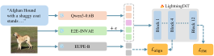
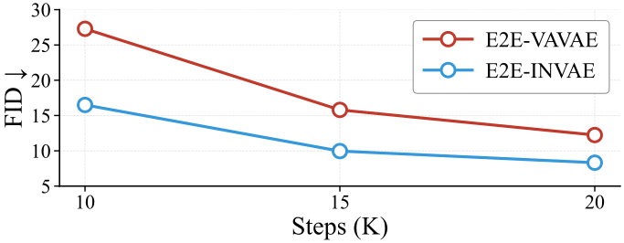
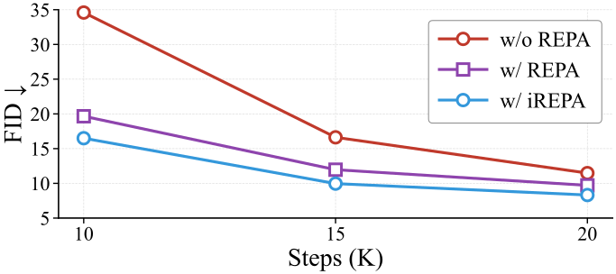

Training diffusion models is computationally heavy, especially for frontier models, and beginners often struggle to find the opportunity to run the whole pipeline. MiniDog is a simple yet useful codebase, where pretraining and fine-tuning of text-to-image (T2I) models can be performed in about an hour and 15 minutes, respectively, on four 3090 GPUs. It targets advanced undergraduate and graduate courses and assumes linear algebra, calculus, probability, and deep learning. On completing the material, beginners can:
- §Build and pretrain: a text-to-image flow-matching pipeline on consumer GPUs.
- §Explain what changes FID: how the tokenizer, caption length, and representation alignment change FID.
- §Fine-tune and evaluate: fine-tune the model and evaluate it with human-preference models.
Click to jump to each section.
Quickstart
git clone -b irepa-eupe https://github.com/llm-robotics/minidog && cd minidog && uv sync
export DATA=data/dog-t2i-diffusion-data
uv run hf download reyhanehesi/dog-t2i-diffusion-data --local-dir $DATA --repo-type dataset
for NAME in dogs_recaptioned_wds dogs_synthetic_2k_wds dogs_recaptioned_64tok_wds; do
mkdir -p $DATA/$NAME && tar -xzf $DATA/$NAME.tar.gz -C $DATA/$NAME && rm $DATA/$NAME.tar.gz
done
uv run python -m minidog.fid_stats --data-dir $DATA/dogs_recaptioned_wds \
--output $DATA/dogs_recaptioned_stats.npz
# EUPE ViT-B/16, the alignment target (its weights are not downloaded automatically)
git clone https://github.com/facebookresearch/EUPE ../EUPE
uv run hf download facebook/EUPE-ViT-B EUPE-ViT-B.pt --local-dir ../eupe_ckpts
export EUPE_REPO_DIR=$(realpath ../EUPE) EUPE_CKPT_DIR=$(realpath ../eupe_ckpts)Pretrain the best recipe
Cache the latents, text embeddings and EUPE features once, then pretrain for 200 epochs.
uv run torchrun --standalone --nproc_per_node=4 -m minidog.precompute_latents_eupe \
--config configs/pretrain_e2e-invae_128tok_mse_irepa_eupe.yaml \
--input-dir $DATA/dogs_recaptioned_wds \
--output-dir $DATA/dogs_recaptioned_latents_e2e-invae_eupe
export EXPERIMENT_NAME=pretrain
uv run torchrun --standalone --nproc_per_node=4 -m minidog.train \
--config configs/pretrain_e2e-invae_128tok_mse_irepa_eupe.yaml --compileFine-tune the pretrained checkpoint
Cache the 2k synthetic images, then fine-tune for 100 epochs with the alignment loss off.
uv run torchrun --standalone --nproc_per_node=4 -m minidog.precompute_latents_eupe \
--config configs/sft_e2e-invae_128tok_mse_norepa.yaml \
--input-dir $DATA/dogs_synthetic_2k_wds \
--output-dir $DATA/dogs_synthetic_2k_latents_e2e-invae_eupe
export EXPERIMENT_NAME=sft
uv run torchrun --standalone --nproc_per_node=4 -m minidog.train \
--config configs/sft_e2e-invae_128tok_mse_norepa.yaml --compile \
--ckpt ckpts/pretrain/checkpoints/ep-0000200.pt --init-weights-onlyGenerate and score
Sample the 500 held-out prompts from both checkpoints with shared noise, then score them with HPSv2 and PickScore.
for RUN in "pretrain configs/pretrain_e2e-invae_128tok_mse_irepa_eupe.yaml" \
"sft configs/sft_e2e-invae_128tok_mse_norepa.yaml"; do
set -- $RUN
uv run python -m minidog.generate --config $2 \
--checkpoint $(ls ckpts/$1/checkpoints/*.pt | tail -1) \
--captions-json $DATA/captions_500.json \
--output-dir results/samples/$1 \
--noise-file results/samples/shared_noise_500.pt --group-by-breed
done
uv run python -m minidog.score_absolute --dirs results/samples/pretrain results/samples/sftThe MiniDog Resource
Data. Pretraining uses 26,000 recaptioned ImageNet images of 20 dog breeds. Supervised fine-tuning (SFT) uses 2,000 high-quality images of the same breeds that we generate with FLUX.1-schnell from text prompts written in the same structure as the real-photo captions. Evaluation uses 500 held-out prompts. All three datasets are released on Hugging Face.
Pipeline. We adopt the DiffusionBench framework. During pretraining, the image caption passes through Qwen3-0.6B to obtain text tokens, and the paired image is fed to a VAE and an external vision encoder. Noise is added to the image latent. Timestep and text tokens are concatenated with the noisy latents into one sequence (in-context conditioning), and this sequence is fed into the diffusion transformer. The vision perception tokens are aligned with intermediate diffusion features at Block 4 of 12, and the flow-matching loss is also applied. At the SFT stage, we turn off the alignment loss and only use the flow-matching loss.

Methods supported:
- Architecture: latent diffusion with a 12-block transformer (22.06M parameters) and in-context conditioning
- VAE: E2E-INVAE, E2E-VAVAE
- Representation alignment: REPA, iREPA
- Vision encoders: DINOv2, DINOv3, PE-Spatial, EUPE
- Fine-tuning: supervised fine-tuning and reward-model-based scoring
Evaluation metrics. We measure generation quality with gFID, using all 26k real pretraining images as the reference set and 26k images generated from the same pretraining prompts. We measure tokenizer reconstruction with PSNR, SSIM, LPIPS and rFID. To assess the effect of SFT, we use two human-preference models, HPSv2 and PickScore, averaged over 500 images that the pretrained and the SFT checkpoints each generate from the 500 held-out prompts.
Training Recipe
Unless otherwise stated, we pretrain for 200 epochs (~20k steps) and fine-tune for 100 epochs (~700 steps). The table lists every hyperparameter of the final recipe.
| Pretraining | SFT | |
|---|---|---|
| Architecture | ||
| Backbone | LightningDiT | |
| Input dim. | 16×16×32 | |
| Patch size | 1 | |
| Num. layers | 12 | |
| Hidden dim. | 384 | |
| Num. heads | 6 | |
| Timestep / text tokens | 4 / 128 | |
| Text encoder | Qwen3-0.6B (frozen) | |
| Tokenizer | E2E-INVAE (frozen) | |
| Alignment (final recipe) | ||
| Target representation | EUPE ViT-B/16 | – |
| Method | iREPA | – |
| Distance d | mean squared error | – |
| λ | 0.5 | – |
| Alignment depth | 4 | – |
| Projector gφ | 3×3 conv, 384→768, padding 1 | – |
| Spatial norm. γ, ε | 0.7, 10−6 | – |
| Alignment (compared in the vision-encoder table) | ||
| Target representations | DINOv2, DINOv3, PE-Spatial, EUPE | – |
| Methods | REPA (linear, 384→768), iREPA | – |
| Distances d | mean squared error, cosine | – |
| Optimization | ||
| Training data | 26k images | 2k images |
| Epochs | 200 (~20k steps) | 100 |
| Batch size | 256 | 256 |
| Optimizer | AdamW | AdamW |
| Learning rate | 10−4, then linear decay | 5×10−5, constant |
| (β1, β2) | (0.9, 0.999) | (0.9, 0.999) |
| Weight decay | 0 | 0 |
| Gradient clipping | 1.0 | 1.0 |
| EMA decay | 0.9995 | 0.995 |
| Condition dropout | 0.1 | 0.1 |
| Precision | bf16 | bf16 |
| Interpolants and sampling | ||
| αt, σt | 1−t, t | |
| Training objective | v-prediction | |
| Timestep sampling | logit-normal(0,1), shift √2 | |
| Sampler | Euler (ODE), 50 steps | |
| Guidance (CFG scale) | 6.0 | |
Computing resources:
- GPUs: 4 of the 8 NVIDIA RTX 3090 GPUs (24 GB, 350 W) in a single server, connected over PCIe 4.0 without NVLink
- CPU and memory: two AMD EPYC 7343 CPUs (32 cores in total), 256 GB of RAM, and the cached inputs on a local NVMe SSD
- Software: Ubuntu 24.04, NVIDIA driver 590.44, Python 3.13, PyTorch 2.10.0 with CUDA 12.8, cuDNN 9.10, NCCL 2.27, and Triton 3.6;
pyproject.tomlanduv.lockpin every package version - Parallelism: PyTorch DistributedDataParallel over the 4 GPUs (64 images per GPU)
Results
Our best recipe
Our best pretraining recipe is to use E2E-INVAE as the tokenizer, 128-token captions, iREPA for acceleration with a mean squared error loss, and EUPE as the external vision encoder. This recipe yields gFID = 8.32 at a resolution of 256×256. We then apply standard SFT, which gives HPSv2 = 0.2427 and PickScore = 19.61. Samples after SFT are shown at the top of this page.
Efficiency
Using four 3090 GPUs, pretraining for 200 epochs takes 55 minutes, while SFT for 100 epochs takes 15 minutes. The image and text tokens are precomputed and cached before training.
Method Comparisons
Each comparison changes one setting and keeps the others fixed. In the tables, green marks the setting used in the final recipe, and bold marks the best value.
Comparing E2E-INVAE and E2E-VAVAE
Both VAEs, trained by the REPA-E method, are publicly available. To compare VAEs, both reconstruction and diffusability are important. We first compare their reconstruction performance: across the four metrics, E2E-INVAE is consistently better. We then compare how they support diffusion model training, where E2E-INVAE also yields lower gFID scores, that is, better diffusability.
| Tokenizer | PSNR↑ | SSIM↑ | LPIPS↓ | rFID↓ |
|---|---|---|---|---|
| E2E-INVAE | 28.42 | 0.792 | 0.039 | 1.14 |
| E2E-VAVAE | 27.59 | 0.753 | 0.044 | 1.39 |

Long caption vs. short caption
For each dog image, we provide a short caption (64 tokens maximum) and a long caption (128 tokens maximum). We compare them using E2E-INVAE, with iREPA, the EUPE encoder and the MSE loss. Training with long captions yields lower gFID, which indicates that long captions allow pretraining to converge faster than short captions.
| FID↓ | 64 tokens | 128 tokens |
|---|---|---|
| E2E-INVAE | 8.54 | 8.32 |
REPA vs. iREPA
We compare REPA, iREPA and a baseline without REPA. REPA clearly accelerates convergence of the baseline. Moreover, when using the EUPE encoder, iREPA converges faster than REPA.

Comparing different vision encoders
DINOv2 performs the best for REPA, while EUPE performs the best for iREPA. While REPA is slightly better under the PE-Spatial encoder, the overall best performance is achieved with iREPA and EUPE. The mean squared error loss is superior to the cosine similarity loss for both REPA and iREPA.
| Target representation | REPA FID↓ | iREPA FID↓ |
|---|---|---|
| Squared error | ||
| DINOv2 ViT-B/14 | 8.80 | 8.68 |
| PE-Spatial B/16 | 9.56 | 9.65 |
| EUPE ViT-B/16 | 9.71 | 8.32 |
| DINOv3 ViT-B/16 | 10.12 | 8.46 |
| Cosine | ||
| DINOv2 ViT-B/14 | 9.14 | 8.89 |
| PE-Spatial B/16 | 9.89 | 9.99 |
| EUPE ViT-B/16 | 10.20 | 8.37 |
| DINOv3 ViT-B/16 | 10.32 | 9.01 |
Benefit of supervised fine-tuning
We compare our pretrained model and the SFT model with two pretrained reward models, which generally reflect how much people would like an image given its prompt. The HPSv2 and PickScore of the SFT model are consistently higher than those of the pretrained model, mainly because of the high-quality SFT data. FID (not shown) of the SFT model is higher than that of the pretrained model, because the high-quality SFT data pulls the model away from the pretraining distribution. The samples at the top of this page are cherry-picked.
| HPSv2↑ | PickScore↑ | |
|---|---|---|
| Pretrained | 0.1625 | 18.42 |
| SFT | 0.2427 | 19.61 |
Conclusion
MiniDog does not build a comprehensive T2I model. Instead, it is a minimal project that focuses on dog image generation for the purpose of democratizing T2I training. Under our configuration, pretraining takes only about an hour on four 3090 GPUs and yields an FID of 8.32 at a resolution of 256×256. Users can spend another 15 minutes on supervised fine-tuning, which improves image quality as judged by pretrained reward models. The entire project, including data, models, and code, has been open-sourced, with the hope of allowing researchers to get started and evaluate their ideas.